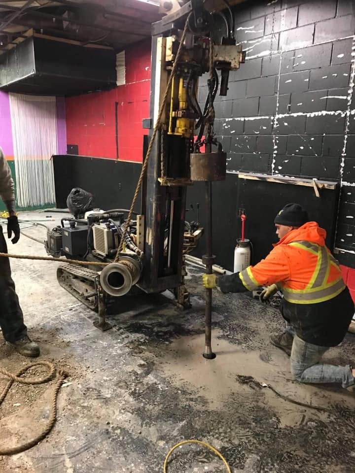

Forage environnemental
Des échantillons de sol et d'eau souterraine prélevés proprement, pour des caractérisations qui résistent à l'examen.

Méthodes de forage et d'échantillonnage
Transaction immobilière, cessation d'activité, réhabilitation : nous forons et installons les puits selon le protocole de votre consultant en environnement.
Échantillonnage de sols
Prélèvement en continu ou par intervalles pour les caractérisations et les suivis de réhabilitation.
Puits d'observation
Puits en PVC avec crépine, massif filtrant, bouchon d'étanchéité et protection de surface.
Développement et purge
Développement des puits nouvellement installés et purge avant l'échantillonnage de l'eau souterraine.
Forage à l'intérieur
Foreuse compacte pour les sous-sols, les commerces et les bâtiments industriels.
Gestion des déblais
Mise en contenant des déblais et des eaux de purge, prêts pour la disposition.
Colmatage des forages
Fermeture des forages au coulis selon les exigences du projet.

Des résultats d'analyse défendables
La qualité d'une caractérisation dépend de la qualité des échantillons. Chaque étape est pensée pour éviter la contamination croisée.
- Décontamination de l'équipement entre les forages
- Contenants fournis par votre laboratoire
- Chaîne de possession respectée jusqu'à la livraison
Une caractérisation à planifier?
Indiquez le nombre de forages et de puits, et joignez le plan d'implantation.